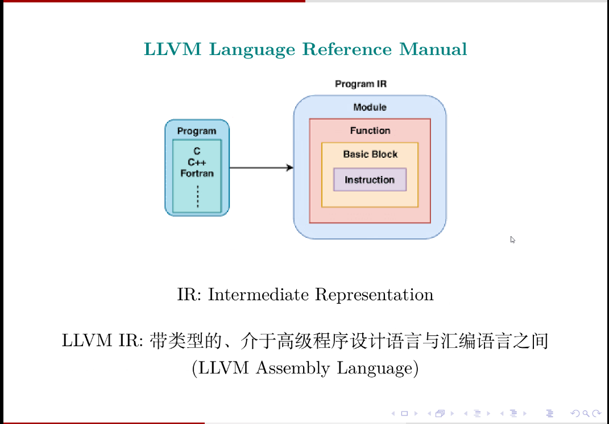
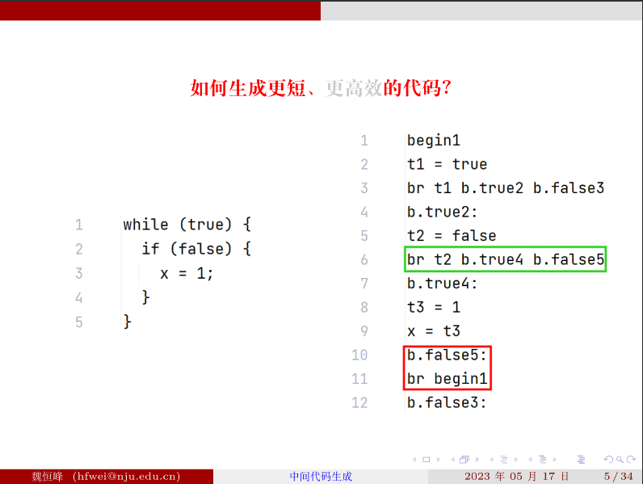
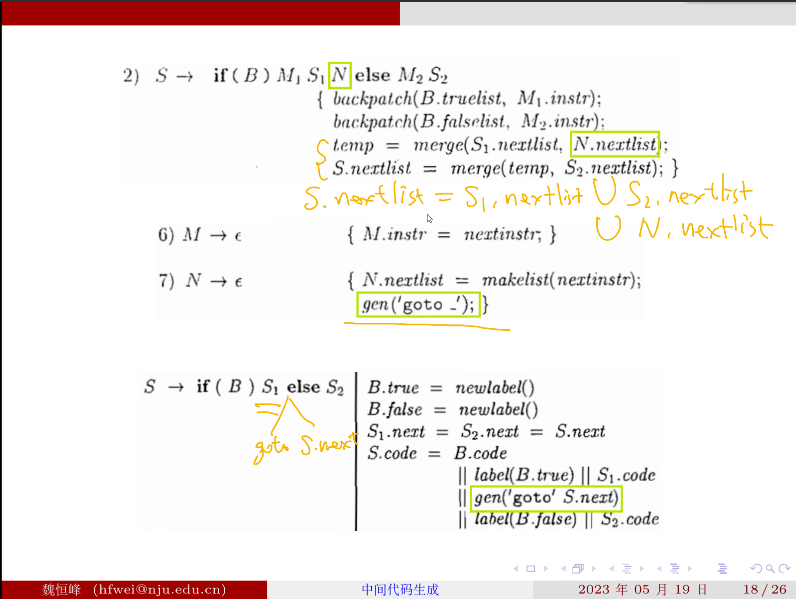

# 编译原理 04 - 中间代码生成
# LLVM IR 简介
LLVM 这个项目与最初的名字含义已经完全不同了，可以将 LLVM 理解为全称。目前 LLVM 是开发新的编译器的基础。
前端经过语法分析，词法分析，生成 IR
“IR 设计的优秀与否决定着整个编译器的好坏”

一个.c 文件对应生成一个.ll 文件。Module 实际上就是一个文件 file, Module 里有多个函数，一个函数具有多个基本块 (Basic Block), 每一个基本块都由多个指令构成。
使用 clang -S -emit-llvm factorial0.c -o f0-opt0.ll 表示用 clang 生成到 llvm 中间代码阶段停止。
中间代码示例：
像 %3 %4 这样的是分配一个虚拟寄存器， alloca 表示内存分配， align 表示内存对齐
store i32 0, i32* %3 表示把 0 存到 %3 寄存器中
call 一行表示函数调用
下一行表示结果与 7 相乘， nsw 表示 no signed wrap
zext: zero - extension 将一 bit 的 %8 扩展为 32 位
%2 哪去了？ 被分配为 entry 基本块的名称
限制：任何一个变量都只能一次赋值， 好处是使用变量时明确知道在什么时候定义过的。
# 控制流图
控制流图的定义：
例子：
中间代码的数据流图：
问题：%6 和 %7 基本块中要约定好把想 ret 的结果放在某一个寄存器中
开了 o1 优化后：

o1 优化会去掉所有的内存分配，store load 指令。
phi 指令 根据从哪个块跳转出来决定赋值给 %8 寄存器的值
然而 phi 指令只是为了简化中间代码的大小产生的，是一个虚拟指令，实际上仍然可能会使用基本方案。
# LLVM JAVA API
在配置文件中加依赖
可以参照 LLVM 官方的教程，c++ 语言如何翻译为中间代码。
# 中间代码翻译
这里的 || 符号是 then 的意思，不是或者。
例子： int a [2] [3]; c + a [i] [j];
在 llvm IR 中：会用 getelementptr（GEP）指令处理数组引用
GEP 指令有四个参数，其中第四个参数不限个数，可以有多个 index。
第一个 index 比较特殊，表示 base-type 的一个元素的大小，用于 a++ 这样的操作，后面的 index 才用于进入数组获取元素，即没多一个 index 脱掉一层中括号。
GEP provides a way to access arrays and manipulate pointers.
GEP abstract away details like size of types.
有了 GEP 指令后就不用像上面那样递归的计算偏移量了。
# 控制流语句的翻译
简单的思路会带来冗余的代码
要生成简短高效的代码，就需要创造困难
简单 mode：
将 B 的值保存到临时变量 t1 中，翻译 if 语句时用 br 语句测试 t1 的值并根据情况跳转到两个基本块中。
以 Control 语言为例：
选择实现方式的范围： Listeners, Visitors, Attributed Grammar
前两种方法能做到的 属性方法都能做到，但是属性文法本身比较困难，所以在前两种中方法中选择。
Listener 模式有一个问题： 比如 B -> B1 || B2 的翻译：
要在 exitB () 方法拼接 B1.code 和 B2.code 。但是考虑出现了短路求值的问题时，由于在 exitB 的时候 B1 和 B2 的代码都生成好了，因此要在拼接 B1.code 和 B2.code 中间插入判断短路求值的代码，不能及时输出生成的中间代码，不能避免频繁的字符串拼接操作。简要来说，访问完 B1，将中间代码保存下来，才能进行接下来的操作，不能在访问 B1 和访问 B2 中间插入一些操作，这是 Listener 模式的缺陷。
具体代码见代码仓库 2023-compilers-coding-0/src/main/java/codegen/CodeGenVisitor.java
true 和 false 的翻译：
AND 语句：
有一个小错误 String temp = getNewTemp () 要放在 emitLabel (trueLabel) 之上。
if 语句：
while 语句：
一个问题：break 语句怎么翻译，多层嵌套的循环语句怎么办
解决方法：使用一个栈，保存 break 语句要跳转到的地方。，参照 while 语句中的压栈出栈语句。
短路求值问题： 参照 And 中的实现
复杂 mode：
为什么让事情变得更复杂：
eg：

如果使用简单方案，将会生成 12 行中间代码，然而实际上这是一个死循环
解决方案：利用继承属性让布尔表达式知道要跳转到哪
# 需要的继承属性
# if 语句
S.next 是之前准备好的
bool 表达式直接翻译成 goto 语句
# if else 语句
eg：
# while 语句
# 顺序语句：
# 短路求值
# 地址回填技术
java 字节码中不使用符号化的标签作为跳转目标，而采用直接的地址值作为跳转目标。
问题：往回跳简单，往前跳不知道跳转的地址，如何一趟扫描中就知道跳转目标的真实地址？
解决方案： B 在 goto 语句后面空着，交给父节点 S 来回填。
从底向上看怎么使用地址回填技术：(每幅图的下半部分是之前的翻译方案)
到这里已经可以确定一些跳转的地址了：
M 是一个辅助的符号，用来确定 B2 第一个指令的地址的值是多少
布尔表达式结束 到达更高层：


顺序语句：
总结：